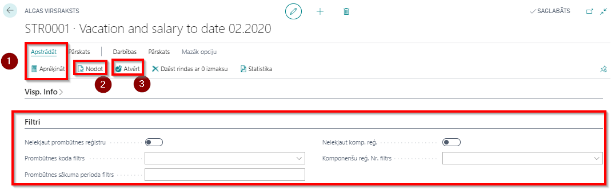

Algas aprēķins
Avansi
Darbiniekiem, kuriem kartiņā ievadīta avansa komponente, iespējams uzģenerēt avansu sarakstu. Informācija par izmaksāto avansu automātiski tiks iekļauta konkrētā mēneša algas aprēķinā un ieturēta no izmaksājamās summas.
Jaunu avansa sarakstu veido klikšķinot uz saīsnes +Avansu saraksti sistēmas sākumlapā. Visi avansu saraksti ir iekļauti kopējā sarakstā Avansu virsraksts.
Sarakstam numurs tiks piešķirts automātiski. Tālāk jāizvēlas Gads un Mēnesis (automātiski tiek aizpildīts ar tekošo gadu un mēnesi).
Avansa saraksta rindu automātiskā ģenerēšana notiek noklikšķinot uz pogas Apstrādāt - Aprēķināt ( ).
).
Pēc avansa saraksta ģenerēšanas un sākotnējās pārbaudes vēlams nomainīt saraksta statusu no Atvērts uz Nodots ( ). Tas nodrošina aprēķina datu aizsardzību pret labojumiem. Ja nepieciešams, statusu var nomainīt pretējā virzienā (
). Tas nodrošina aprēķina datu aizsardzību pret labojumiem. Ja nepieciešams, statusu var nomainīt pretējā virzienā ( ).
).
Ja pirms darbinieku saraksta ģenerēšanas, netika izmantoti filtri, tad sistēma ielasīs visus darbiniekus, un tiem, kam nav avansa maksājums paredzēts, rindās atrādīsies ar 0 summu. Šos darbiniekus var izdzēst no saraksta noklikšķinot uz pogas Dzēst rindas ar 0 izmaksu ().
Avansu saraksta rīkjoslas sadaļās Pārskats un Apstrādāt ir pieejamas sekojošas papildus funkcijas:
- Algas lapiņa – iespēja izdrukāt un nosūtīt algas lapiņas par avansa izmaksu.
- Eksports uz maksājumu žurnālu – tiks sagatavoti maksājumu ieraksti eksportam uz maksājumu žurnālu, no kura varēs tālāk eksportēt uz banku un iegrāmatot.
- Algu saraksta izdruka – avansa saraksta izdruka apstiprināšanai.
- Importēt avanss no Excel - iespējams importēt avansu datus no Excel faila.
Starpizmaksas
Atvaļinājuma naudu, kuru nepieciešams izmaksāt darbiniekam pirms atvaļinājuma, kā arī dažādus prēmiju vai dāvanu sarakstus, izmaksā no starpizmaksu saraksta – tas ir pirms mēneša gala aprēķina. Starpizmaksās tiek atvilkti nodokļi no aprēķinātajām summām atbilstošā periodā. Ģenerējot algu sarakstu, starpizmaksās izmaksātās summas automātiski iekļausies atvilkumos un samazinās izmaksājamo summu.
Pirms starpizmaksu aprēķina jābūt savadītai informācijai prombūtņu reģistros un komponenšu reģistros.
Ja nepieciešams atdalīt aprēķinus pa veidiem, tad jāizmanto cilne Filtri (). Filtru cilnē atzīmē kritērijus aprēķiniem, kurus vēlas (vai nevēlas) izmaksāt starpizmaksā. Piemēram, neievadot nevienu filtra kritēriju, izvēlētajam darbiniekam uz izmaksu tiks sagatavoti gan aktuālie prombūtņu reģistra ieraksti, gan komponenšu reģistra ieraksti.
Tip
Ja kopā ar atvaļinājuma naudu nepieciešams izmaksāt arī algu par nostrādāto periodu līdz atvaļinājumam, tad prombūtņu reģistrā jāreģistrē prombūtnes ieraksts ar kodu ALGA_PER (Alga par periodu).
Jaunu starpizmaksu sarakstu veido klikšķinot uz saīsnes Starpizmaksu saraksti sistēmas sākuma lapā vai izmantojot sistēmas meklētāju. Visi starpizmaksu saraksti ir iekļauti kopējā sarakstā Starpizmaksu saraksti.
Sarakstam numurs tiks piešķirts automātiski. Tālāk jāizvēlas Gads un Mēnesis (automātiski tiek aizpildīts ar tekošo gadu un mēnesi).
Starpizmaksas saraksta rindu automātiskā ģenerēšana notiek noklikšķinot uz pogas Apstrādāt - Aprēķināt ().
Pēc starpizmaksas saraksta ģenerēšanas un sākotnējās pārbaudes vēlams nomainīt saraksta statusu no Atvērts uz Nodots (). Tas nodrošina aprēķina datu aizsardzību pret labojumiem. Ja nepieciešams, statusu var nomainīt pretējā virzienā ().

Starpizmaksas saraksta rīkjoslas sadaļā Pārskats ir pieejamas sekojošas papildus funkcijas:
- Algas lapiņa – iespēja izdrukāt un nosūtīt algas lapiņas par starpizmaksas izmaksu.
- Eksports uz maksājumu žurnālu – tiks sagatavoti maksājumu ieraksti eksportam uz maksājumu žurnālu, no kura varēs tālāk eksportēt uz banku un iegrāmatot.
- Algu saraksta izdruka – starpizmaksu saraksta izdruka apstiprināšanai.
Algas aprēķins
Pēc tam, kad
- reģistrētas amata maiņas
- reģistrētas algas maiņas,
- pārbaudīta nodokļu grāmatiņu informācija,
- ievadītas prombūtnes,
- pēc nepieciešamības ievadīti dati stundu reģistrā,
- ievadītas vienreizējas piemaksas un ieturējumi Komponenšu reģistrā,
- ievadītas ikmēneša piemaksas un ieturējumi darbinieku kartiņā, un citas darbinieku datu izmaiņas (piemēram, konts)
tiek ģenerēts mēnesi noslēdzošais algas saraksts. Katrs darbinieks mēneša ietvaros var būt tikai vienā aktuālā algu aprēķinā. Var veidot vairākus algu sarakstus – piemēram, katrai struktūrvienībai savu. Parasti atsevišķi tiek veidots algu saraksts atbrīvotiem darbiniekiem, lai korekti veiktu izmaksas.
Jaunu algu sarakstu veido klikšķinot uz saīsnes +Algas saraksti sistēmas sākumlapā vai izmantojot sistēmas meklētāju. Visi algu saraksti ir iekļauti kopējā sarakstā Algu saraksti.
Sarakstam numurs tiks piešķirts automātiski. Tālāk jāizvēlas Gads un Mēnesis (automātiski tiek aizpildīts ar tekošo gadu un mēnesi).
Algu saraksta rindu automātiskā ģenerēšana notiek noklikšķinot uz pogas Apstrādāt () - Aprēķināt ().
Izmantojot funkciju Aprēķināt algu saraksta ģenerēšanai var uzlikt filtrus gan uz darbinieka Nr., gan uz struktūrvienības koda. Ja funkcija tiek izmantota bez filtriem, tad sarakstā būs visi darbinieki, kuriem šajā mēnesī ir norādītas aprēķina summas.
Pēc algu saraksta ģenerēšanas un sākotnējās pārbaudes vēlams nomainīt saraksta statusu no Atvērts uz Nodots (). Tas nodrošina aprēķina datu aizsardzību pret labojumiem. Ja nepieciešams, statusu var nomainīt pretējā virzienā ().
Algu saraksta rīkjoslas sadaļās Pārskats un Apstrādāt ir pieejamas sekojošas papildus funkcijas:
- Algas lapiņa – iespēja izdrukāt un nosūtīt algas lapiņas par algas izmaksu.
- Eksports uz maksājumu žurnālu – tiks sagatavoti maksājumu ieraksti eksportam uz maksājumu žurnālu, no kura varēs tālāk eksportēt uz banku un iegrāmatot.
- Algu saraksta izdruka – algas saraksta izdruka apstiprināšanai.
Algu saraksta cilnē Rindas - Rindas ir pieejamas sekojošas funkcijas par katru iezīmēto darbinieku:
- Darbinieka detalizācija – pieejama saīsne uz visiem vēsturiskajiem aprēķinu datiem, kas saistīti ar apskatīto darbinieku.
- Darba laiks – pieejami pārskata mēneša dati par plānoto un faktisko darba laiku apskatītajam darbiniekam.
- Vidējā izpeļņa – ja darbiniekam pārskata mēnesī ir bijusi apmaksāta prombūtne, tad var apskatīt datus par prombūtni un vidējo izpeļņu, kas izmantota prombūtnes apmaksai.
Algu sarakstu iespējams mainīt un dzēst līdz tas ir iegrāmatots un/ vai nosūtīts uz maksājuma žurnālu. Ja pēc algu saraksta nosūtīšanas uz izmaksu, izmaksas un/vai grāmatošanas atklājas nepieciešamība veikt labojumus vai precizējumus, tad jāizmanto pārrēķina iespējas vai storno funkcija. Stornēt var visu dokumentu vai tikai atsevišķu rindiņu kādam darbiniekam ( vai vairākiem darbiniekiem). Ja nepieciešams stornēt visu dokumentu, tad rīkjoslā klikšķina uz Darbības - Storno dokumenta ģenerēšana. Ja nepieciešams stornēt tikai darbinieku rindiņas atsevišķi, tad cilnē Rindas iezīmē rindiņu ( vai vairākas), ko nepieciešams stornēt un klikšķina uz Rinda - Izveidot labojumu. Sīkāk par labojumu veikšanu ir aprakstīts nodaļā Labojumi un darbību atcelšana.
Lai saģenerētu atskaiti, kurai ir saistība ar algas aprēķinu, nav nepieciešams grāmatot algu sarakstu. Visas algu atskaites un pārskati veidojas no algu sarakstiem, neatkarīgi no to statusa.
Ja algas aprēķina rezultātā Izmaksāt summa izveidojas negatīva (darbiniekam ir pārmaksāts), tad pārmaksātā summa tiek pārnesta uz nākamo algas aprēķinu (kā atvilkums) ar sistēmas ģenerētā ieraksta palīdzību Komponenšu reģistrā.